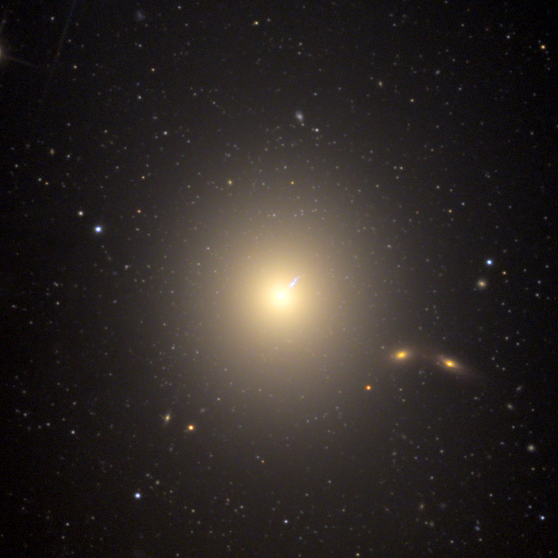

Guangzhou Galactic Nuclei Voyagers
Extragalactic Astrophysics
This webpage introduces the Active Galactic Nuclei Physics Group at the Center for Astrophysics, Guangzhou University. Welcome to communicate with us.
About
Members
Events
Publication & Data